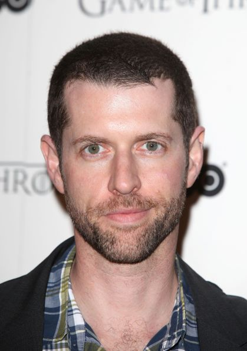

From the
novel by Leo Tolstoy...
1805. The Antichrist, Napoleon Buonaparte, has overrun Western Europe. His undefeated armies imminently threaten
Germany; and once he sweeps over Central Europe, it's impossible to imagine the army that can defeat him. In the shadow of this newly-sprung Titan, life continues much as
before in Russian high society. Young men court, win over, and break off with young women in St. Peterburg's salons. Three young men - the awkward Pierre Bezukhov, the haughty Andrey Bolkonsky,
and the headstrong Nikolai Rostov - make their entrances into society, struggling to find their place in a treacherous social world, as the French armies march ever closer...
Download the
first chapter here!
The Directors
|
David Benioff |
I remember first encountering Tolstoy as a kid at Dartmouth just entering the world. Life was so turbulent and confusing, but when I curled up in my 12-by-19 dorm room and just
read War and Peace, it was like someone just laid everything out in a way that makes sense. What Tolstoy gets is that there aren't "white hats" and "black hats" in this world - his snowy Russian nights
are full of shades of grey. We want to capture the biggest "game of thrones" of 19th century Europe, and all the complex, difficult men who took part in it. |
|  |
D.B. Weiss |
Everyone likes to talk about the "war" in Tolstoy's novel, but to me, he writes most powerfully about "peace." So many of us can personally relate to the way Pierre falls into a relationship he isn't ready for, with
such tragic results. What we want to bring out in our adaptation of Tolstoy is that "war" really can be "peace" for men, compared to the "peaceful" life where all of us are, every day, at war. |